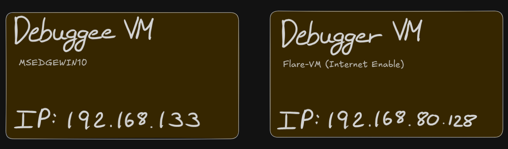
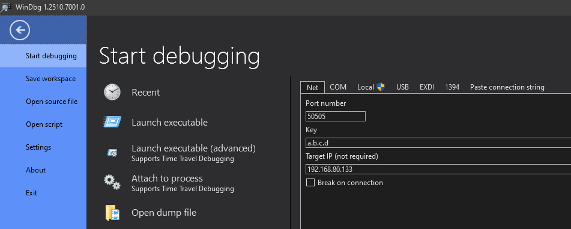
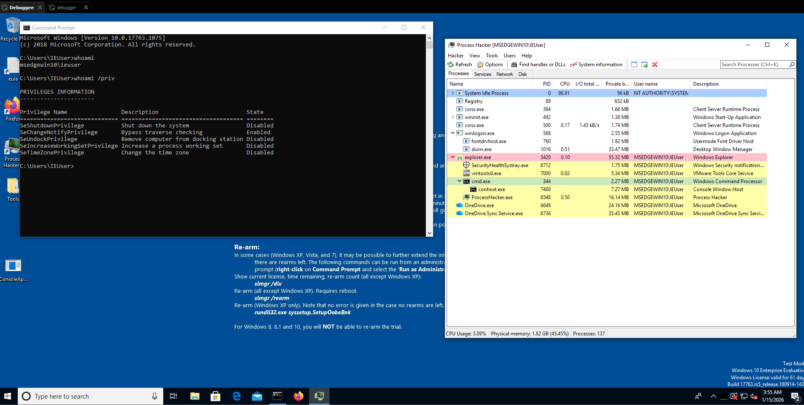
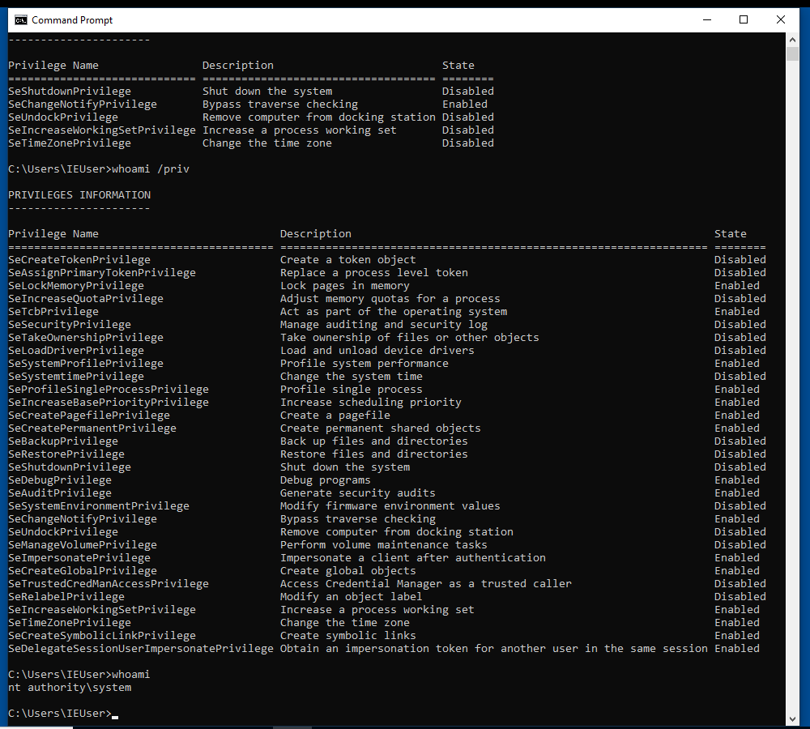
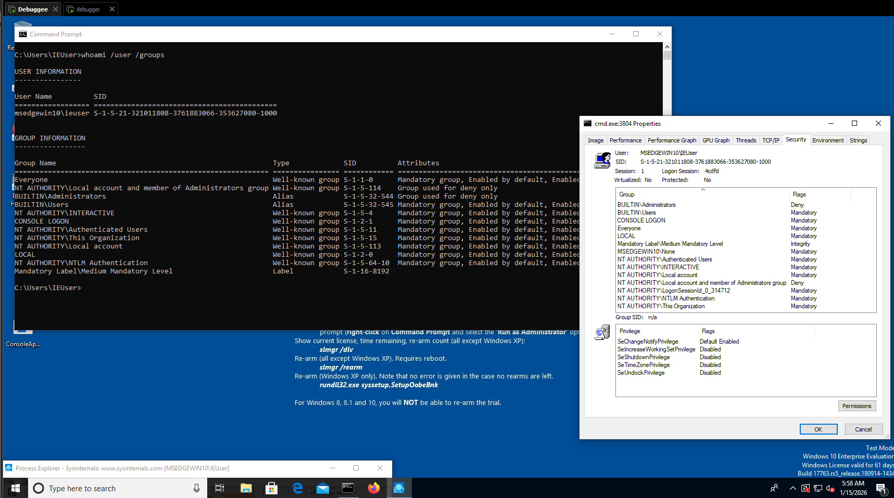
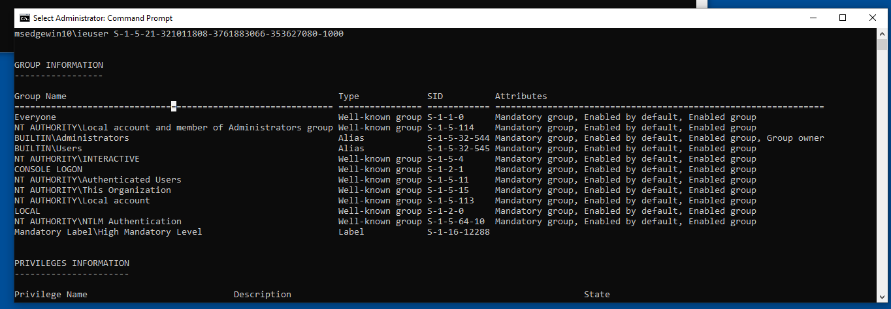
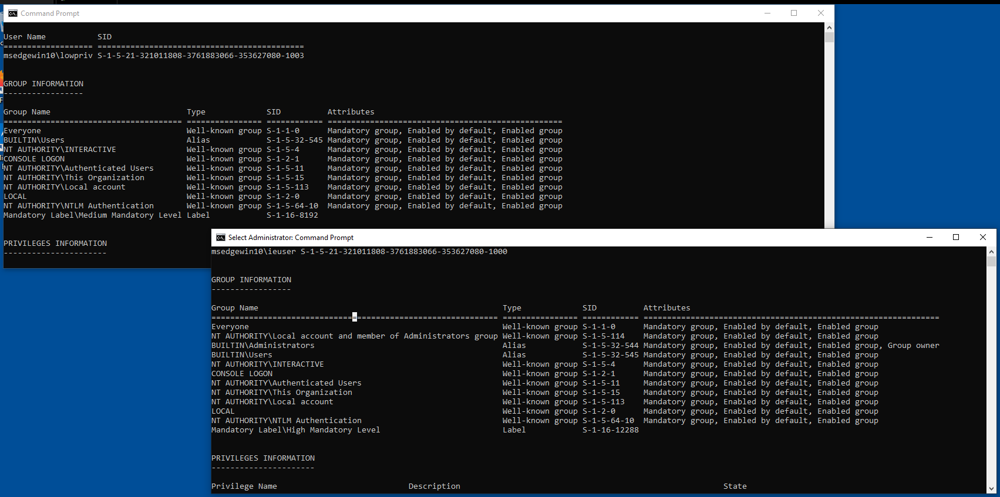
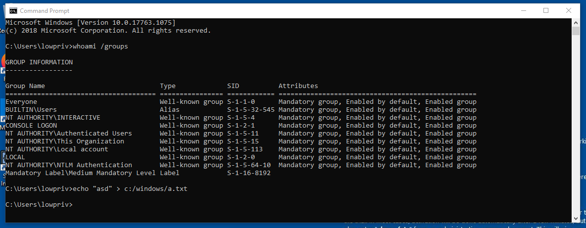

Elementary: Understanding Processes
Before diving in windows reversing I want to acknowledge to OpenSecurityTrainig (ost2) for their free classes of architecture and OS internal, please check them out, to a better understanding of this blog, at least is recommendable know of Windbg (Debuggers 1011-2011-3011 [in ost2]) and Windows Internals (Architecture 2821 [in ost2])
I would also like to thank m2rc_ who helped me at the end of the blog with the attributes of the SID Hijacking.
Getting Started
The setup we will have is the following:

First of all you will have to enable the kernel debugging:
// Debuggee Machine (IP: 192.168.80.133)
Microsoft Windows [Version 10.0.19045.2965]
(c) Microsoft Corporation. All rights reserved.
C:\Windows\system32>bcdedit /debug on
The operation completed successfully.
C:\Windows\system32>bcdedit /dbgsettings net hostip:192.168.1.160 port:50505 key:a.b.c.d
Key=a.b.c.dOnce through WinDbg (debugger VM) attach the tool with the debugge kernel:

If you can break in windbg and the custom terminal shows:
// Debugger Machine (IP: 192.168.80.128)
nt!DbgBreakPointWithStatus:
fffff802`7e67a500 cc int 3
0: kd>
We are ready to start debugging.
Remember to quit the breakpoint to be able to manipulate the debugge machine else it will not respond.
Process Token Hijacking
Starting with the simplest way to escalate privileges in windows (in my opinion) is with a token hijacking, thus assuming there is a non-priviledge cmd.exe process in the debuggee:

With windbg we are able to see the process and gather information about it:
// Debugger Machine (IP: 192.168.80.128)
0: kd> !process 0 0 cmd.exe
PROCESS ffffdb85c57e5080
SessionId: 1 Cid: 0158 Peb: 72749c000 ParentCid: 0d5c
DirBase: 61433000 ObjectTable: ffffb38e99843400 HandleCount: 74.
Image: cmd.exeUnderstanding structures
Now, before seeing the token of the process we do a fast check of the _EPROCESS structure used in windows:
//0x850 bytes (sizeof)
struct _EPROCESS
{
struct _KPROCESS Pcb; //0x0
struct _EX_PUSH_LOCK ProcessLock; //0x2d8
VOID* UniqueProcessId; //0x2e0
struct _LIST_ENTRY ActiveProcessLinks; //0x2e8
// ...
struct _EX_FAST_REF Token; //0x358
//...
volatile ULONGLONG OwnerProcessId; //0x3f0
struct _PEB* Peb; //0x3f8
struct _MM_SESSION_SPACE* Session; //0x400
// ...
};
If you want to see the entire structure please check: https://www.vergiliusproject.com/kernels/x64/windows-10/1809/_EPROCESS (verify your windows version), in this scenario, we will focus on the structure _EX_FAST_REF Token; //0x358, which contains the real value of the token:
//0x8 bytes (sizeof)
struct _EX_FAST_REF
{
union
{
VOID* Object; //0x0
ULONGLONG RefCnt:4; //0x0
ULONGLONG Value; //0x0
};
};
Kernel debugging Tip
To use fewer bytes in memory, the kernel structure usually maintains hidden information in the same value, here is an example in the process structure, we have the address: 0xffffdb85c57e5080 meaning the process location, but if you want to see the structure _EX_FAST_REF for the Token value you add to the address the offset of the structure, in this case 0x358:
>>> hex(0xffffdb85c57e5080 + 0x358)
'0xffffdb85c57e53d8'Also, in this structure: _EX_FAST_REF, the last 4 bits do not form part of the token value, because the RefCnt aligment are of 4 bits.
Looking the lowpriv process
We obtain ‘0xffffdb85c57e53d8’, theorically this is the information we wanted, so lets check it in windbg, one of the main favorable points of this tool is that has the offsets and structures loaded (usually from the machine symbols) so we will see all more clearly:
// Debugger Machine (IP: 192.168.80.128)
0: kd> dt nt!_EPROCESS ffffdb85c57e5080 TOKEN
+0x358 Token : _EX_FAST_REFWithout getting further in windbg explanation we are reading the address the last command return us as a nt!_EPROCESS structure, filtring it to the TOKEN structure, now if we insert the address calculated before:
// Debugger Machine (IP: 192.168.80.128)
0: kd> dt nt!_EX_FAST_REF 0xffffdb85c57e53d8
+0x000 Object : 0xffffb38e`918a38f9 Void
+0x000 RefCnt : 0y1001
+0x000 Value : 0xffffb38e`918a38f9We obtain the raw token value, anyways this is not to common in windbg because thanks to the user interface you can be redirect to the structure in a beautiful way:
// Debugger Machine (IP: 192.168.80.128)
0: kd> dx -id 0,0,ffffdb85c57e5080 -r1 (*((ntkrnlmp!_EX_FAST_REF *)0xffffdb85c57e53d8))
(*((ntkrnlmp!_EX_FAST_REF *)0xffffdb85c57e53d8)) [Type: _EX_FAST_REF]
[+0x000] Object : 0xffffb38e918a38f8 [Type: void *]
[+0x000 ( 3: 0)] RefCnt : 0x9 [Type: unsigned __int64]
[+0x000] Value : 0xffffb38e918a38f8 [Type: unsigned __int64]Continuing with the token hijacking, take note of the ieuser token and the offset is located from the process address:
// Our Notebook
Process Target (cmd.exe : ieuser)
-> Process: 0xffffdb85c57e5080
-> Token offset (const): +0x358
-> Token value: 0xffffb38e918a38f8 & ~0xF // As we see in RefCnt:4Gathering nt/auth token
For this method the attacker needs a second token to hijack, in this case we will hijack the NT AUTHORITY/SYSTEM from the process System, now a bit faster:
// Debugger Machine (IP: 192.168.80.128)
0: kd> !process 0 0 System
PROCESS ffffdb85c0c69280
SessionId: none Cid: 0004 Peb: 00000000 ParentCid: 0000
DirBase: 001aa000 ObjectTable: ffffb38e8ce04ac0 HandleCount: 2578.
Image: System
0: kd> dt nt!_EPROCESS ffffdb85c0c69280 TOKEN
+0x358 Token : _EX_FAST_REF
0: kd> dx -id 0,0,ffffdb85c0c69280 -r1 (*((ntkrnlmp!_EX_FAST_REF *)0xffffdb85c0c695d8))
(*((ntkrnlmp!_EX_FAST_REF *)0xffffdb85c0c695d8)) [Type: _EX_FAST_REF]
[+0x000] Object : 0xffffb38e8ce06047 [Type: void *]
[+0x000 ( 3: 0)] RefCnt : 0x7 [Type: unsigned __int64]
[+0x000] Value : 0xffffb38e8ce06047 [Type: unsigned __int64]Update your notebook:
// Our Notebook
Process Target (cmd.exe : ieuser)
-> Process: 0xffffdb85c57e5080
-> Token offset (const): +0x358
-> Token value: 0xffffb38e918a38f8 & ~0xF
Process Victim (System : nt sys)
-> Process: 0xffffdb85c0c69280
-> Token value: 0xffffb38e8ce06047 & ~0xF = 0xffffb38e8ce06040Patching the lowpriv process
Patch the token from cmd.exe to point to the System one:
// Debugger Machine (IP: 192.168.80.128)
0: kd> dq 0xffffdb85c57e5080+358 l1 // Reading the cmd.exe token
ffffdb85`c57e53d8 ffffb38e`918a38f8
0: kd> eq ffffdb85c57e5080+358 0xffffb38e8ce060407 // Hijacking cmd.exe token with the System token
0: kd> dq 0xffffdb85c57e5080+358 l1 // Verifying the new cmd.exe token
ffffdb85`c57e53d8 0xffffb38`e8ce06040Going to the debuggee machine, Since the token is replaced in-place, the already running cmd.exe immediately reflects the new security context.

As I said is a very simple way to escalate privileges but is not for getting X user or X priv, is only to understand how windows structures work and it prepare you for the future exploit or program.
SID Replacement
This method is not patch the owner SID process to be Local System, that will crash, also know as a deadlock, replacing the user SID directly causes token incosistency and system instability, getting you a blue screen or a deadlock. The User SID is not just an identity, as the token, it is tied to the authentication context of the token.
Thus, the SID Replacement can be consider a Group SID replacemente or Integrity SID replacement. Remember, for this you need to create a low priv user, because ieuser is in the Admin Group, so he doesnt need to enter the password or any auth to execute as admin,
Creating lowpriv user
Remember for this attack do not be in a administrator account:
// Debuggee Machine (IP: 192.168.80.128)As the Token Hijacking, first of all we will create the cmd process and gather a bit of information, also verify that is not in any admin lcoal group with:

// Debugger Machine (IP: 192.168.80.133)
C:\Windows\System32> net user lowpriv qwerty123 /add
C:\Windows\System32> net user lowprivGathering lowpriv information
0: kd> !process 0 0 cmd.exe
PROCESS ffffde889880c540
SessionId: 2 Cid: 24f8 Peb: 141d43f000 ParentCid: 2224
DirBase: 116678000 ObjectTable: ffff8001cf253640 HandleCount: 74.
Image: cmd.exe
0: kd> !process ffffde889880c540 1
PROCESS ffffde889880c540
SessionId: 2 Cid: 24f8 Peb: 141d43f000 ParentCid: 2224
DirBase: 116678000 ObjectTable: ffff8001cf253640 HandleCount: 74.
Image: cmd.exe
VadRoot ffffde8898b0cee0 Vads 34 Clone 0 Private 196. Modified 0. Locked 8.
DeviceMap ffff8001cead5340
Token ffff8001ceec68c0
ElapsedTime 06:34:34.306
UserTime 00:00:00.000
KernelTime 00:00:00.000
QuotaPoolUsage[PagedPool] 42720
QuotaPoolUsage[NonPagedPool] 5064
Working Set Sizes (now,min,max) (1000, 50, 345) (4000KB, 200KB, 1380KB)
PeakWorkingSetSize 1027
VirtualSize 2101303 Mb
PeakVirtualSize 2101306 Mb
PageFaultCount 1281
MemoryPriority BACKGROUND
BasePriority 8
CommitCharge 592
0: kd> !token ffff8001ceec68c0
_TOKEN 0xffff8001ceec68c0
TS Session ID: 0x2
User: S-1-5-21-321011808-3761883066-353627080-1003
User Groups:
00 S-1-5-21-321011808-3761883066-353627080-513
Attributes - Mandatory Default Enabled
01 S-1-1-0
Attributes - Mandatory Default Enabled
02 S-1-5-32-545
Attributes - Mandatory Default Enabled
03 S-1-5-4
Attributes - Mandatory Default Enabled
04 S-1-2-1
Attributes - Mandatory Default Enabled
05 S-1-5-11
Attributes - Mandatory Default Enabled
06 S-1-5-15
Attributes - Mandatory Default Enabled
07 S-1-5-113
Attributes - Mandatory Default Enabled
08 S-1-5-5-0-4807673
Attributes - Mandatory Default Enabled LogonId
09 S-1-2-0
Attributes - Mandatory Default Enabled
10 S-1-5-64-10
Attributes - Mandatory Default Enabled
11 S-1-16-8192
Attributes - GroupIntegrity GroupIntegrityEnabled
Primary Group: S-1-5-21-321011808-3761883066-353627080-513
Privs:
19 0x000000013 SeShutdownPrivilege Attributes -
23 0x000000017 SeChangeNotifyPrivilege Attributes - Enabled Default
25 0x000000019 SeUndockPrivilege Attributes -
33 0x000000021 SeIncreaseWorkingSetPrivilege Attributes -
34 0x000000022 SeTimeZonePrivilege Attributes -
...In all type of tokens there is a structure pointer: _SID_AND_ATTRIBUTES* RestrictedSids in the offset: 0xa0, please check there is no protection or any block into the admin hash you will see forward.
//0x10 bytes (sizeof)
struct _SID_AND_ATTRIBUTES
{
VOID* Sid; //0x0
ULONG Attributes; //0x8
};
Gathering admin information
While reading: https://learn.microsoft.com/en-us/windows-server/identity/ad-ds/manage/understand-security-identifiers you can get the conclusion the SID of the System process (high priv user) is S-1-5-18, anyways you can obtain it with windbg:
0: kd> !process ffffde888f46d200 1
PROCESS ffffde888f46d200
SessionId: none Cid: 0004 Peb: 00000000 ParentCid: 0000
DirBase: 001aa000 ObjectTable: ffff8001c4404ac0 HandleCount: 3737.
Image: System
VadRoot ffffde888f4702e0 Vads 8 Clone 0 Private 22. Modified 71267. Locked 0.
DeviceMap ffff8001c4415900
Token ffff8001c4406040
...
0: kd> !token ffff8001c4406040
_TOKEN 0xffff8001c4406040
TS Session ID: 0
User: S-1-5-18
User Groups:
00 S-1-5-32-544
Attributes - Default Enabled Owner
01 S-1-1-0
Attributes - Mandatory Default Enabled
02 S-1-5-11
Attributes - Mandatory Default Enabled
03 S-1-16-16384
Attributes - GroupIntegrity GroupIntegrityEnabled
Primary Group: S-1-5-18
Privs:
02 0x000000002 SeCreateTokenPrivilege Attributes -
03 0x000000003 SeAssignPrimaryTokenPrivilege Attributes -
04 0x000000004 SeLockMemoryPrivilege Attributes - Enabled Default
05 0x000000005 SeIncreaseQuotaPrivilege Attributes -
07 0x000000007 SeTcbPrivilege Attributes - Enabled Default
08 0x000000008 SeSecurityPrivilege Attributes -
09 0x000000009 SeTakeOwnershipPrivilege Attributes -
10 0x00000000a SeLoadDriverPrivilege Attributes -
11 0x00000000b SeSystemProfilePrivilege Attributes - Enabled Default
12 0x00000000c SeSystemtimePrivilege Attributes -
13 0x00000000d SeProfileSingleProcessPrivilege Attributes - Enabled Default
14 0x00000000e SeIncreaseBasePriorityPrivilege Attributes - Enabled Default
15 0x00000000f SeCreatePagefilePrivilege Attributes - Enabled Default
16 0x000000010 SeCreatePermanentPrivilege Attributes - Enabled Default
17 0x000000011 SeBackupPrivilege Attributes -
18 0x000000012 SeRestorePrivilege Attributes -
19 0x000000013 SeShutdownPrivilege Attributes -
20 0x000000014 SeDebugPrivilege Attributes - Enabled Default
21 0x000000015 SeAuditPrivilege Attributes - Enabled Default
22 0x000000016 SeSystemEnvironmentPrivilege Attributes -
23 0x000000017 SeChangeNotifyPrivilege Attributes - Enabled Default
25 0x000000019 SeUndockPrivilege Attributes -
28 0x00000001c SeManageVolumePrivilege Attributes -
29 0x00000001d SeImpersonatePrivilege Attributes - Enabled Default
30 0x00000001e SeCreateGlobalPrivilege Attributes - Enabled Default
31 0x00000001f SeTrustedCredManAccessPrivilege Attributes -
32 0x000000020 SeRelabelPrivilege Attributes -
33 0x000000021 SeIncreaseWorkingSetPrivilege Attributes - Enabled Default
34 0x000000022 SeTimeZonePrivilege Attributes - Enabled Default
35 0x000000023 SeCreateSymbolicLinkPrivilege Attributes - Enabled Default
36 0x000000024 SeDelegateSessionUserImpersonatePrivilege Attributes - Enabled Default
Also you can reach out this microsoft blog for a better understanding of how SID is programmed: https://devblogs.microsoft.com/oldnewthing/20040315-00/?p=40253
In this case, we will focus on SID: S-1-5-32-544 as is the BUILTIN\Administrator, it doesn’t matter which SID you choose:

That terminal is when you Run as Administrator after putting the password, here is the diff:

Calculating structures offsets for hijack
Being the priv esc token: ffff8001cf1af900, we can calculate the offset of the SID we want: UserAndGroups[3].
0: kd> !token ffff8001cf1af900
_TOKEN 0xffff8001cf1af900
TS Session ID: 0x2
User: S-1-5-21-321011808-3761883066-353627080-1000
User Groups:
00 S-1-5-21-321011808-3761883066-353627080-513
Attributes - Mandatory Default Enabled
01 S-1-1-0
Attributes - Mandatory Default Enabled
02 S-1-5-114
Attributes - Mandatory Default Enabled
03 S-1-5-32-544
Attributes - Mandatory Default Enabled Owner
Again, if we check the offset of the struct we get: +0x098:
0: kd> dt nt!_TOKEN ffff8001cf1af900 UserAndGroups
+0x098 UserAndGroups : 0xffff8001`cf1afd90 _SID_AND_ATTRIBUTES
0: kd> dx -id 0,0,ffffde888f46d200 -r1 ((ntkrnlmp!_SID_AND_ATTRIBUTES *)0xffff8001cf1afd90)
((ntkrnlmp!_SID_AND_ATTRIBUTES *)0xffff8001cf1afd90) : 0xffff8001cf1afd90 [Type: _SID_AND_ATTRIBUTES *]
[+0x000] Sid : 0xffff8001cf1afe80 [Type: void *]
[+0x008] Attributes : 0x0 [Type: unsigned long]
0: kd> dx ((nt!_TOKEN*)0xffff8001cf1af900)->UserAndGroups[3]
((nt!_TOKEN*)0xffff8001cf1af900)->UserAndGroups[3] [Type: _SID_AND_ATTRIBUTES]
[+0x000] Sid : 0xffff8001cf1afec4 [Type: void *]
[+0x008] Attributes : 0x7 [Type: unsigned long]Once the information has been collected in your notebook:
process -> token -> sid offset -> sid value
(lowpriv) ffffde889880c540 -> ffff8001ceec68c0 -> ?? -> ??
S-1-5-15 -> To change
(admin) ffffde8898a71080 -> ffff8001cf1af900 -> 03-> 0xffff8001cf1afec4
S-1-5-32-544 -> To hijackWithin the low-privilege token, we identified “This Organization,” which is unlikely to be used and could therefore be a suitable target for hijacking.
06 S-1-5-15
Attributes - Mandatory Default Enabled
So, the objetive is to reemplaze This Organization (S-1-5-15) to Administrators (S-1-5-32-544), we finish the previuos table:
0: kd> dx ((nt!_TOKEN*)0xffff8001ceec68c0)->UserAndGroups[6]
((nt!_TOKEN*)0xffff8001ceec68c0)->UserAndGroups[6] [Type: _SID_AND_ATTRIBUTES]
[+0x000] Sid : 0xffff8001ceec6e8c [Type: void *]
[+0x008] Attributes : 0x7 [Type: unsigned long](lowpriv) ffffde889880c540 -> ffff8001ceec68c0 -> 06 -> 0xffff8001ceec6e8cReplacing SID Group pointer
Now, it is time to manually calculate the offset in order to use eq to replace the SID. As we know, the UserAndGroups structure has a size of 0x10 bytes. Since S-1-5-15 is at index 6, the calculation is 0x10 × 6 plus the SID address:
0: kd> dq 0xffff8001ceec68c0+0x98 l1
ffff8001`ceec6958 ffff8001`ceec6d50 // SID Address
0: kd> dq ffff8001`ceec6d50+60 l1
ffff8001`ceec6db0 ffff8001`ceec6e8c // SID Value
And we hijack the value:
0: kd> dq ffff8001`ceec6d50+60 l1 // Read again haha
ffff8001`ceec6db0 ffff8001`ceec6e8c
0: kd> eq ffff8001ceec6d50+60 ffff8001`cf1afec4 // Hijack the SID
0: kd> eb ffff8001ceec6d50+60+0x8 f // Change the attribue value
0: kd> dq ffff8001`ceec6d50+60 l1 // Check the new SID
ffff8001`ceec6db0 ffff8001`cf1afec4Attributes fix
If you dont change the attribute value from 0x7 to 0xf, for being group owner in the !token wont appear any change. For more information:
https://learn.microsoft.com/en-us/windows/win32/api/winnt/ns-winnt-token_groups
Now, if the user tries to do an administration action, such as write in the C:/Windows/ folder, he will be able to do it, without restriction.

Despite all, binaries like: whoami wont be recognized by the shell and if you try to execute it with the full path it will crash the OS. One theory is that it is the relationship between the user and the process token, causing a mismatch that leads to the crash, but surely this is not even close to what is really happening.
(Brief) Conclusion
The section shown below is not directly related to the sections of the entire blog.
0: kd> dq 0xffffb305cb1e9060+0x98 l1
ffffb305`cb1e90f8 ffffb305`cb1e94f0
0: kd> dq ffffb305`cb1e94f0
ffffb305`cb1e94f0 ffffb305`cb1e95c0 00005fec`00000000
ffffb305`cb1e9500 ffffb305`cb1e95dc 00005ab6`00000007
ffffb305`cb1e9510 ffffb305`cb1e95f8 000a8000`00000007
ffffb305`cb1e9520 ffffb305`cb1e9604 0000000c`00000007
ffffb305`cb1e9530 ffffb305`cb1e9614 00005434`00000007
ffffb305`cb1e9540 ffffb305`cb1e9620 000ad000`00000007
ffffb305`cb1e9550 ffffb305`cb1e962c 0000000c`00000007
ffffb305`cb1e9560 ffffb305`cb1e9638 5ae85a67`00000007
0: kd> eq 0xffffb305`cb1e9520 0xffffb305cb23d630
0: kd> eb 0xffffb305`cb1e9520+0x8 0xf
0: kd> dq ffffb305`cb1e94f0
ffffb305`cb1e94f0 ffffb305`cb1e95c0 00005fec`00000000
ffffb305`cb1e9500 ffffb305`cb1e95dc 00005ab6`00000007
ffffb305`cb1e9510 ffffb305`cb1e95f8 000a8000`00000007
ffffb305`cb1e9520 ffffb305`cb23d630 0000000c`0000000f
ffffb305`cb1e9530 ffffb305`cb1e9614 00005434`00000007
ffffb305`cb1e9540 ffffb305`cb1e9620 000ad000`00000007
ffffb305`cb1e9550 ffffb305`cb1e962c 0000000c`00000007
ffffb305`cb1e9560 ffffb305`cb1e9638 5ae85a67`00000007lowpriv:
- TOKEN: 0xffffb305cb1e9060
02 S-1-5-32-545 (Alias: BUILTIN\Users)
Attributes - Mandatory Default Enabled
0: kd> dx ((nt!_TOKEN*)0xffffb305cb1e9060)->UserAndGroups[3]
[+0x000] Sid : 0xffffb305cb1e9604 [Type: void *]
[+0x008] Attributes : 0x7 [Type: unsigned long]
0: kd> dq ffffb305`cb1e94f0
ffffb305`cb1e94f0 ffffb305`cb1e95c0 00005fec`00000000
ffffb305`cb1e9500 ffffb305`cb1e95dc 00005ab6`00000007
ffffb305`cb1e9510 ffffb305`cb1e95f8 000a8000`00000007
ffffb305`cb1e9520 ffffb305`cb1e9604 0000000c`00000007
ffffb305`cb1e9530 ffffb305`cb1e9614 00005434`00000007
ffffb305`cb1e9540 ffffb305`cb1e9620 000ad000`00000007
ffffb305`cb1e9550 ffffb305`cb1e962c 0000000c`00000007
ffffb305`cb1e9560 ffffb305`cb1e9638 5ae85a67`00000007
admin:
- TOKEN: 0xffffb305cb23d060
03 S-1-5-32-544 (Alias: BUILTIN\Administrators)
Attributes - Mandatory Default Enabled Owner
0: kd> dx ((nt!_TOKEN*)0xffffb305cb23d060)->UserAndGroups[4]
[+0x000] Sid : 0xffffb305cb23d630 [Type: void *]
[+0x008] Attributes : 0xf [Type: unsigned long]I hope you enjoyed the write-up. :)
До скорого.